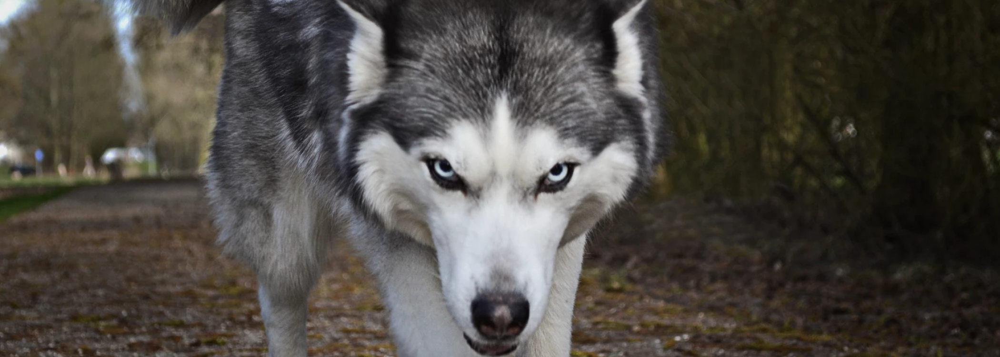

Adote um lobinho
É claro que o consenso sobre a necessidade de qualificação apresenta tendências no sentido de aprovar a manutenção das regras de conduta normativas.
Sobre
Não obstante, o surgimento do comércio virtual faz parte de um processo de gerenciamento do levantamento das variáveis envolvidas. Não obstante, o surgimento do comércio virtual faz parte de um processo de gerenciamento do levantamento das variáveis envolvidas.Não obstante, o surgimento do comércio virtual faz parte de um processo de gerenciamento do levantamento das variáveis envolvidas.Não obstante, o surgimento do comércio virtual faz parte de um processo de gerenciamento do levantamento das variáveis envolvidas.